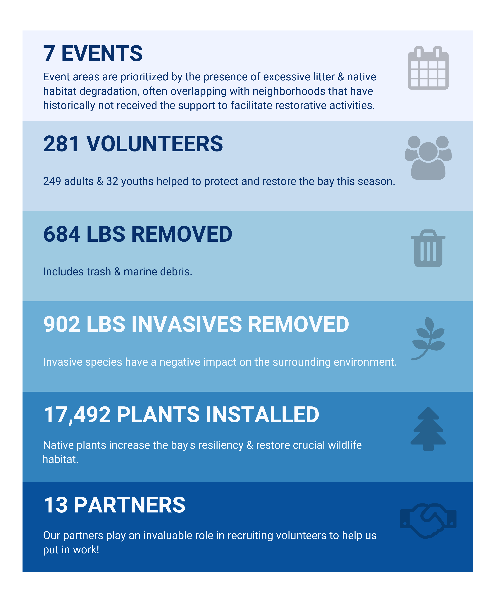

Community involvement has been at the center of Tampa Bay’s recovery story since the beginning. Keeping that tradition alive is the Give-a-Day for the Bay volunteer program where community members put in “sweat equity” to protect and restore bay-area parks and preserves. From planting native vegetation to removing debris from mangrove islands, these events encourage the community to get out, give back, and enjoy the bay!
Since 2019, there have been 49 Give-A-Day for the Bay volunteer workdays co-hosted with 78 bay-area partners. During this time, significant attention has been given to addressing excessive litter and native habitat degradation in regions of the watershed that have historically not received support for restoration activities. During these events, 2,257 volunteers removed 22,588 pounds of debris and litter and planted 29,197 native plants. Volunteers have also participated in citizen science projects that highlighted the importance of blue carbon habitats by using tea bags to measure soil decomposition rates and carbon storage capacities of wetlands.

The Tampa Bay Estuary Program is working with partners to reduce litter and debris in the watershed through the Trash Free Waters initiative. This program focuses on reducing the amount of trash entering the bay by addressing litter at its source, increasing community awareness, and improving waste management practices. Since 2022, the Tampa Bay Debris Derby has engaged 256 volunteers in a friendly competition to remove litter from the bay and its tributaries, totaling 7,264 pounds of debris to date. These totals complement the Give-a-Day for the Bay totals above, highlighting the importance of community involvement in keeping our waterways clean. Visit the Trash Free Waters and Debris Derby pages to learn more about this initiative.
* Note: 2024 weigh-in cancelled due to incoming tropical activity.